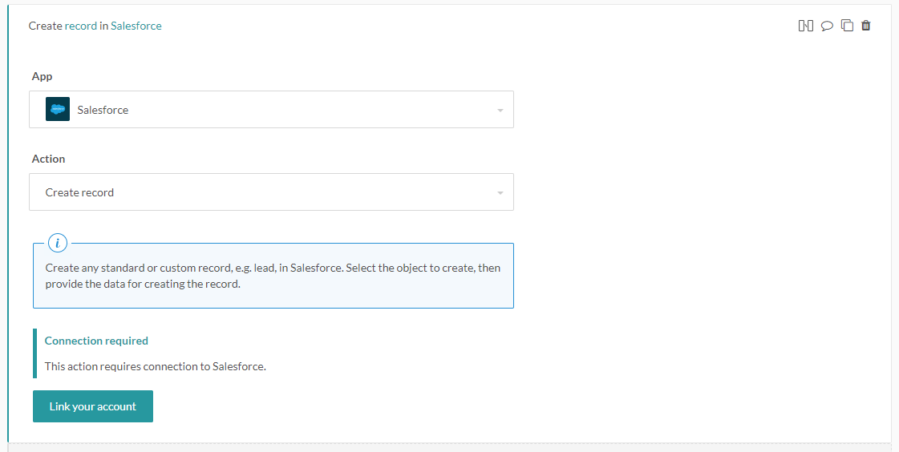
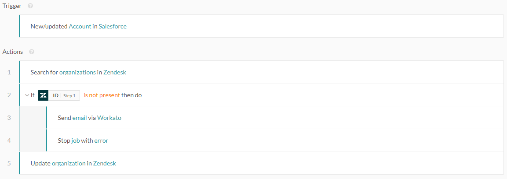
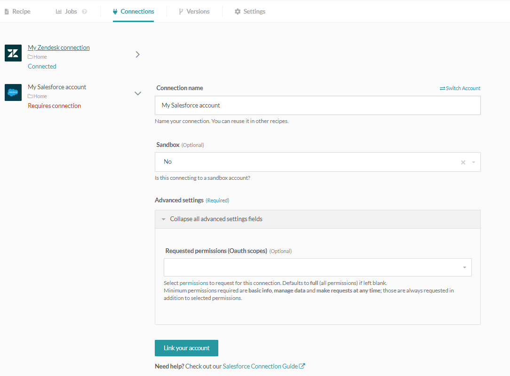
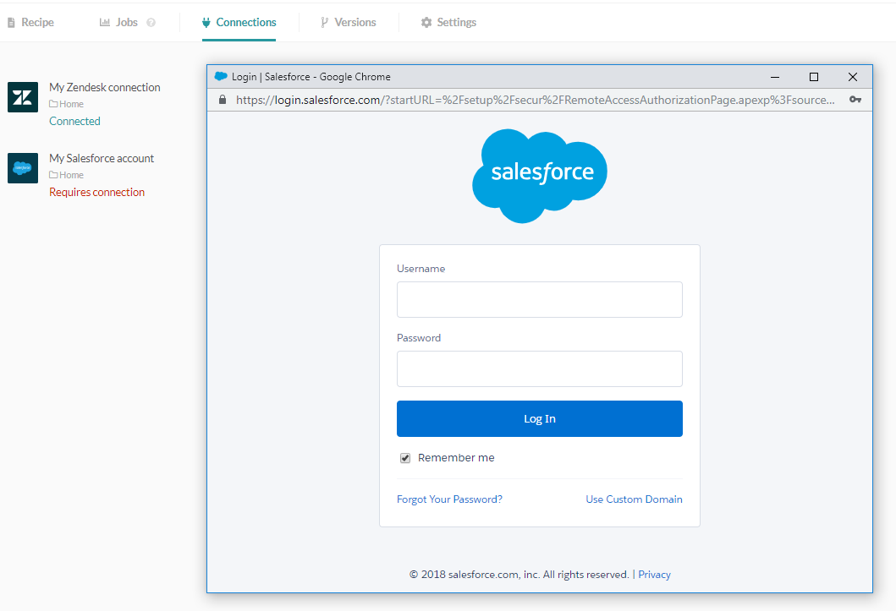
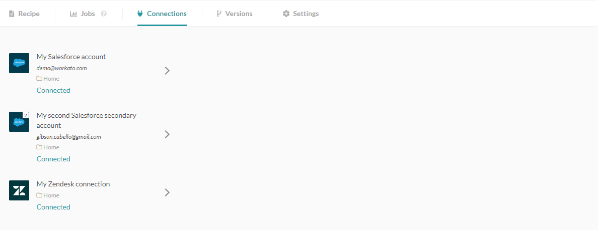

App connections
Recipes are automated worflows that read data from and write data to apps. In order to interact with app data, Workato needs to be connected to these applications. Connectors typically require a connection before triggers and actions can be configured, as they need to retrieve custom objects and custom fields from the connected apps.

Recipe prompts user to connect to their Salesforce organization. Picklist is greyed out because the Salesforce connector does not know what objects are available in the unconnected organization.
Connections are created when a user authenticates with the app via Workato, and gives permission to Workato to access the data. Each connection should correspond to a single app instance, hence multiple recipes can and should utilize the same connection if working with the same app instance.
Authentication
Authentication usually occur the following standard ways, although there are some apps with custom authentication flows.
- OAuth2
- Basic authentication
- API keys or secrets
In each of the highlighted authentication flows, an app user has to verify that Workato has permission to access app data. The exact permissions Workato will get to read from and write to the app usually corresponds with the permissions of the connected app user.
For more information on connecting to a specific app, refer to the specific connector documentation.
Example of OAuth2 authentication flow for Salesforce
The following recipe requires both Salesforce and a Zendesk connections, which are OAuth2. The Connection tab within the recipe shows further details about the app connections.
 Example recipe
The following shows the Connections tab. Zendesk has been connected, but the Salesforce connector has no connection established yet.

Recipe without a Salesforce connection established
Clicking on the Connect button generates a popup that requests for Salesforce login credentials. Because Salesforce utilizes the standard OAuth2 authentication flow, usernames and passwords are provided only to Salesforce. Providing these credentials assure Salesforce that the user is giving permission for Workato to access their Salesforce data.

OAuth2 authentication popup for Salesforce
After providing credentials, Salesforce will show up as connected.

Recipe with Salesforce and Zendesk connections established
Integration user
Workato recipes usually automate the workflows of a company or a department via the app API, and the permissions required might therefore span multiple users and roles. As a result, the connected user is typically a special integration user created to manage Workato integrations, with API access rights and permissions that enable integrations to work successfully.
For example:
- A recipe that moves new Salesforce accounts into Zendesk as new organizations will need read access to Salesforce accounts and write access for Zendesk organizations.
- A recipe that moves new Salesforce cases into JIRA as new issues will need read access to Salesforce cases and write access for JIRA issues.
Apps have different granularity when it comes to defining user roles and permissions. Refer to the specific connector documentation for more information on required permissions to connect to the app.
Using connections in recipes
One app connection has to be created for each instance of an app. For example, a single Salesforce connection needs to be created for each Salesforce organization, and a single JIRA connection needs to be created for each JIRA team. In cases whereby there are more than 1 app instance to connect to, e.g. when working with sandboxes and production organizations or teams, multiple connections should be created, with each connection authenticated with each separate instance.
Most Workato connectors allow only one connection to used in a a recipe. There are some connectors which allows for two instances to be connected to a recipe. The following shows the primary and secondary Salesforce connectors being used in a recipe.

The recipe correspondingly requires two Salesforce connections.

Primary and secondary Salesforce connections
Refer to the Secondary connectors article to find out more.